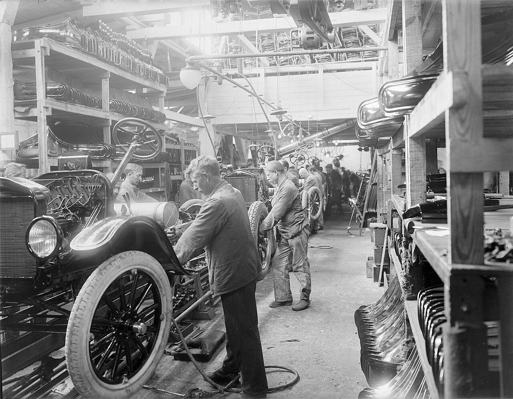
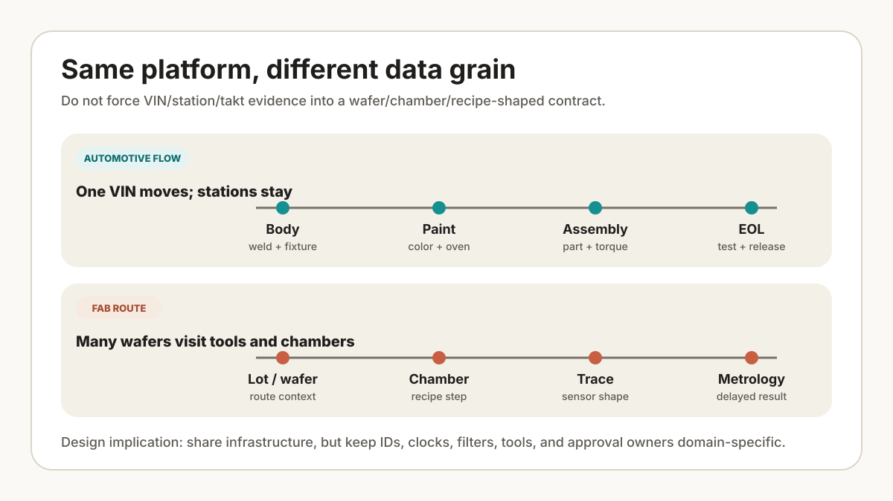

This is a cross-domain engineering comparison, not a claim of automotive production experience. The station case below is constructed and must be reviewed by an automotive manufacturing SME before it is used for architecture, safety, quality, or line-control decisions.
For each proposed use case, identify the controlled unit, event clock, authoritative record, action owner, safe-state decision, and evidence needed for release. The answers differ between wafer processing and vehicle assembly.
Put two handoff sheets side by side. The fab sheet names a chamber, recipe revision, step trace, wafer, and later metrology. The assembly sheet names a VIN, station, robot program, fixture state, torque or vision result, Andon event, and takt window. Both are manufacturing evidence, but they describe different physics and different authority paths.

{kind=link}
A fab engineer asks, "Which chamber, recipe step, trace shape, wafer, and metrology signal changed?" An automotive manufacturing engineer asks, "Which VIN, part, station, robot cell, torque result, vision image, operator action, and takt window changed?" Same AI vocabulary, different plant grammar.
Where the architectures part company
Keep the data and control models separate even when the platform layer is shared. FAB AI is anchored in process state, equipment behavior, and delayed measurement. Automotive AI is anchored in product flow, station cadence, robot-cell state, and quality genealogy. RAG, on-prem model serving, MCP, knowledge graphs, and evaluation harnesses can serve both, but their filters, tools, and approval owners need domain-specific contracts.
| Question | FAB AI | Automotive AI |
|---|---|---|
| Control unit | Wafer, lot, chamber, recipe step. | VIN, part, station, robot cell, takt window. |
| Main risk | Yield loss, excursion, chamber drift, scrap. | Line stop, wrong part, torque escape, unsafe motion, recall risk. |
| Data center | FDC traces, SPC, metrology, APC, equipment events. | PLC tags, robot logs, vision images, torque records, Andon, QMS, EOL test. |
| Best first AI use | Fault detection, virtual metrology, recipe/context retrieval. | Vision inspection, robot-cell anomaly review, diagnostic RAG, takt-aware escalation. |
Unit of control
In FAB work, the mental map often starts with the tool. The chamber runs a recipe. The wafer experiences process steps. Metrology later tells the team whether the hidden process behaved. That is why trace alignment, golden runs, chamber matching, recipe revision, and process context matter so much.
In automotive assembly, the mental map starts with product flow. A vehicle body, module, or part moves through stations. Robots weld, seal, paint, lift, place, tighten, scan, and inspect. The line has cadence. If one station loses rhythm, downstream stations feel it quickly.
A fab review may begin with a trace shift that precedes metrology change. An automotive station review may begin with a nominal pass accompanied by longer cycle time, a changed torque curve, lower vision confidence, or repeated operator correction. These are example review patterns, not observed plant events.
Data shape
The data difference is the reason the content should not be merged. FAB data is often dense time-series plus recipe context. Automotive data is more like an event chain around a physical object: the VIN entered station 120, robot 4 executed program B, weld nugget signal was borderline, operator confirmed rework, torque tool passed, EOL test later raised a diagnostic symptom.
That means automotive AI content needs to teach readers how to build a plant evidence timeline, not only a model input table.
- VIN genealogy: which parts, suppliers, lots, stations, tools, and test results belong to one vehicle.
- Station events: start, complete, blocked, bypassed, reworked, held, released.
- Robot-cell evidence: program ID, path segment, servo load, weld current, gun wear, fixture state, safety state.
- Quality evidence: inspection image, defect class, control plan item, FMEA linkage, 8D action, containment status.

Robotics changes the problem
Automotive robotics is not only a data problem. It is an embodied automation problem. A robot cell has motion, zones, fixtures, sensors, people, and maintenance modes. An AI system that merely predicts "abnormal" is not enough. It must explain whether the signal is safe to act on, who owns the action, and whether the line can absorb the decision.
For example, a body-shop welding robot may show a slowly rising servo load and a small increase in weld defects. An anomaly score alone does not select an action. The review also needs gun wear, fixture condition, recent maintenance, affected VIN range, containment plan, and whether an approved stop can be used for inspection.
Assume station BS-120 joins a constructed body-side example with robot R4. During a hypothetical 20-minute window, median cycle time moves from 54 to 58 seconds, weld-gun servo load rises 9%, and three of 40 inspection images fall below an example confidence threshold of 0.82. Those images initially point the review toward vision-model drift. Fixture state and gun-maintenance counters then show that the image change overlaps a mechanical-state change, so model drift remains unproven. These values are not plant measurements or recommended limits.
The useful output is an evidence packet, not a robot command: VIN range, program revision, fixture state, weld-current trace, gun-maintenance counter, image IDs, operator interventions, and upstream/downstream station status. Production decides whether takt can absorb an inspection; quality defines containment and affected-product review; maintenance checks gun and fixture condition; the safety owner controls access and motion state. The AI may rank hypotheses and draft the packet, but state changes stay on approved PLC, safety, robot-controller, and stop/restart paths.
Pass: VIN-to-event joins are complete for the reviewed window, timestamps meet the site's synchronization rule, safety state is present, and replay returns the same evidence set. Stop: do not recommend containment scope when VIN membership, program revision, or safety state is unresolved. Limit: the exercise excludes automatic line stop, robot motion, quality disposition, and restart.
Automotive SME review gate
Before adoption, an automotive manufacturing SME should verify the station vocabulary, event sequence, takt assumptions, ownership split, containment path, and interfaces to the control plan, PFMEA, QMS, MES, Andon, robot controller, PLC, and safety PLC. A safety specialist must separately review any safety-related claim; SME review of this example does not certify a system.
How agents should differ
A fab agent and an automotive agent can share MCP, RAG, approval gates, and audit logs. Their permissions should differ.
| Agent action | FAB posture | Automotive posture |
|---|---|---|
| Read evidence | Recent alarms, traces, recipe revision, metrology. | VIN route, station events, robot logs, vision result, Andon history. |
| Suggest action | Review chamber, hold lot, check PM state. | Escalate station, inspect affected VINs, prepare containment. |
| Write action | Usually gated by process owner and MES control. | Usually gated by line owner, quality owner, and safety owner. |
| Danger zone | Recipe, dispatch, hold/release, engineering change. | Robot motion, safety bypass, line stop/restart, quality disposition. |
The important phrase is takt-aware. An automotive agent cannot behave like a slow desk assistant if it is supporting the shop floor. It must know which answers are for immediate escalation, which are for the next shift handover, and which are for an engineering investigation after production stabilizes.
Series roadmap
The automotive series should start with concepts, then move into buildable artifacts:
- Automotive data 101: PLC tags, robot logs, vision images, torque records, QMS, PLM, MES, EOL test.
- VIN genealogy vs wafer genealogy: traceability as the backbone of retrieval and quality investigation.
- Takt-aware agents: how to design agent responses around line cadence and approval gates.
- Robot cell AI architecture: camera, robot controller, PLC, safety PLC, MES, historian, and audit log.
- Vision inspection: golden samples, false alarms, defect taxonomy, rework loops, and model drift.
- Safety and quality checklist: robot safety, functional safety, IATF 16949 vocabulary, FMEA, control plan, and OT security.
Use this comparison as a routing decision, not a maturity score. For the next layer of evidence, read VIN genealogy vs wafer genealogy; it shows how the two domains build containment sets from their own event models.